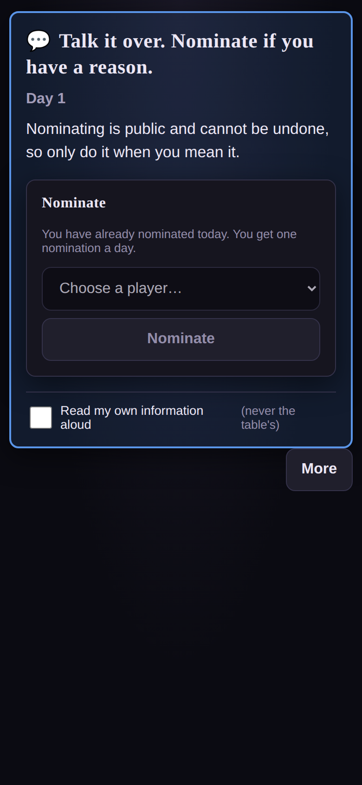
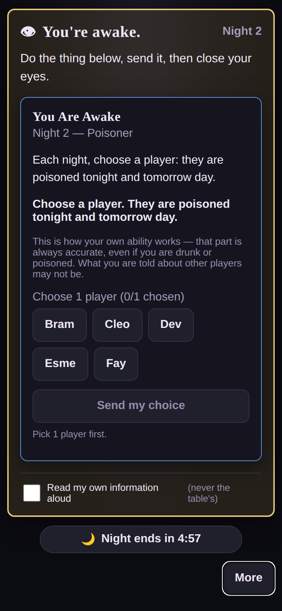
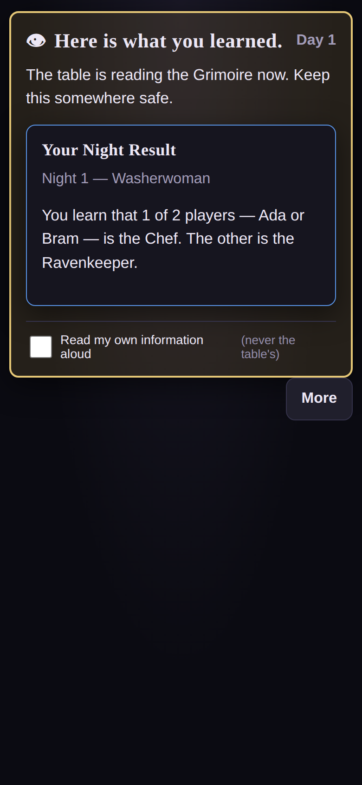
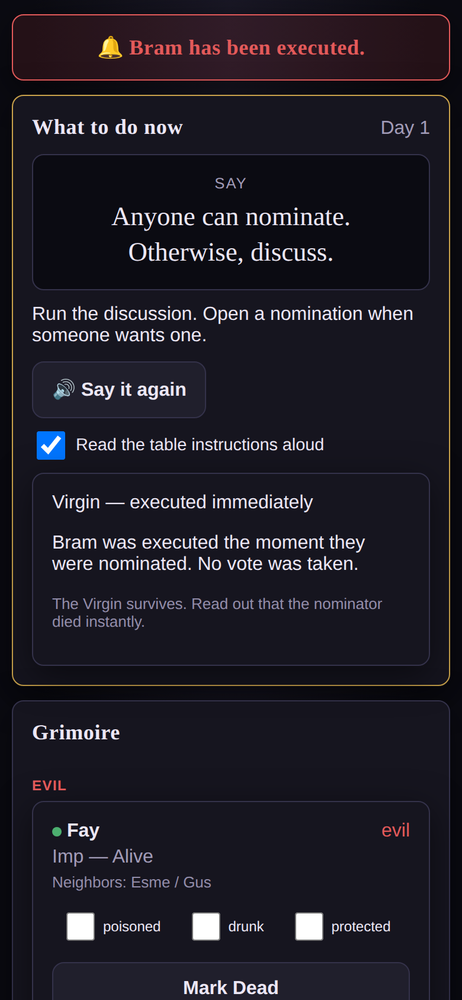

Blood on the Clocktower companion app · small wins first, then the big ones · every tier tested and played before moving on
Tiers 1–6 are done, tested and played. The game is playable and the characters work. Every finding in the original audit is closed; one of them turned out not to be a bug at all.
Measured in the browser, not estimated. .faint carries every explanatory line in the app
and was the hardest text on every screen.
| token | was | now | verdict |
|---|---|---|---|
--text-faint | 3.51:1 | 5.71:1 | PASS |
--good-blue | 3.84:1 | 5.94:1 | PASS |
--evil-red | 3.08:1 | 5.06:1 | PASS |
The dark red is kept separately as --evil-red-border, where it was doing the right
job as a 1px border all along.
opacity: 0.45 composited the label to ~3.9:1 and turned the gold gradient to olive.
A disabled control is the app telling a player “no”, and the app's own rule is that the client is the
thing that has to know — so an invisible one says nothing.
disabled button now: colour=rgb(147,141,170) background=rgb(32,31,44) opacity=1
The app told every living player “A simple majority of the living players executes.” The rule is
“equals or exceeds half” — a different, stricter rule that disagrees on every even table.
ceil(alive/2) and today's best tally are now in the protocol and on screen.
Vote: hands up if you are in. 3 of the living players is enough to execute. You can change your vote until the Storyteller closes it. Nomination: Ada Nominated by Bram Votes for execution: 0 of 3 needed 3 more votes needed. "simple majority" still on screen: false
The Storyteller's “On the block” panel now states the number too, and the panel explains the tie rule and the “must beat today’s best tally” rule when they are in play.
There were zero uses of document.title, Notification,
vibrate or any audio in the whole client. The complete set of signals a player got when woken
was a border colour and two words changing — so with the phone face-down the Storyteller had to shout
their name, which is the ritual this app exists to replace.
player awake -> document.title = "⚡ YOU ARE AWAKE — Clocktower"
navigator.vibrate([120, 80, 120])
vote open on you -> "🗳 You are being voted on — Clocktower"
Title and vibration deliberately, not a web Notification: browsers reject
requestPermission unless it comes from a user gesture, so a real notification needs a
separate opt-in switch during onboarding.
It was a single unconfirmed, irreversible click sitting right next to a checkbox — and the first thing a new Storyteller presses by accident.
one click on "Mark Dead" -> clicked, player still alive the card now offers: "Kill Bram?" | "Cancel"
Five overlays declared aria-modal="true" while trapping nothing. All of them now close on
Escape and on a backdrop tap, move focus inside on open, and restore it on close.
More sheet: opens=true focus moved inside=true Escape closes it=true
viewport-fit=cover was missing, so
env(safe-area-inset-bottom) was always 0 and the More button sat under a notched phone's
home indicator — the player could not tap the control that opens everything else.

This was not a wrong string. It was a state the UI could never be in. The result arrives when
the night resolves, at which point the player no longer owes a choice — and
showNightPrompt is true only while they do. So the one component that can render a result
was unmounted at precisely the moment a result arrived. The Chef and the Empath, who are woken and told
and never given a picker, could not see theirs by construction.
There is now a night-result moment, in the right order among the three beats a real table
has: an outstanding choice outranks the information, which outranks “done, close your eyes.”
night 1 Empath "You learn that none of your living neighbours is evil."
Butler "Your choice is noted. Remember it for tomorrow."
Imp "The night passes."
night 2 Empath "You learn that none of your living neighbours is evil." <- fresh, not night 1's
Butler "Your choice is noted. Remember it for tomorrow."
Shown in the moment card at the two beats that matter — the moment the night resolves, and dawn while the table reads the Grimoire — then it yields to the day's instruction and moves to the More sheet, labelled with the night it belongs to. An Empath can check last night's number against tonight's without a stale answer reappearing in tonight's slot.
The moment results became visible, a bug inside them became visible too. The app was appending “The other is the Ravenkeeper.” That is not extra detail, it is a false statement about one of the two named players — and the decoy was drawn from characters that really were in play, so it named a genuine role. A player who saw it was being told the truth about the table, in the one piece of information the character exists to give them.
before: "You learn that 1 of 2 players — Ada or Bram — is the Chef.
The other is the Ravenkeeper." <- Bram IS the Ravenkeeper
after: "You learn that 1 of 2 players — Ada or Bram — is the Chef."
The decoy is now drawn from characters not in play, which is what the real game does — the second token exists precisely so that showing it gives the player nothing.
Read straight off the Storyteller's own Night Order panel: the Poisoner was woken eighth of ten, after every information role had already been told the truth. So poisoning somebody that night did nothing at all — the poison was applied after the abilities it was meant to disable had already run.
| Night | was | now |
|---|---|---|
| 1 | Washerwoman, Librarian, Investigator, Chef, Empath, FT, Poisoner, Spy, Imp | Poisoner, Washerwoman, Librarian, Investigator, Chef, Empath, FT, Butler, Spy, Imp |
| 2+ | Empath, FT, Undertaker, Monk, Ravenkeeper, Butler, Poisoner, Spy, Imp | Poisoner, Monk, Imp, Ravenkeeper, Empath, FT, Butler, Undertaker, Spy |
The Minions and the Demon go first so the Storyteller can decide what may safely be told before
anyone acts on their ability. The Butler also never woke on night one at all — its First Night slot
had been null.
A test was lying about this. One was named “returns the official First Night order” and asserted an order that put the Poisoner fifth of seven. A test whose name asserts a rule it does not check is worse than no test: it makes the bug look like a decision. It now asserts the sheet, and a new test states the consequence that actually matters — the Poisoner is woken first, on every night.

The living-count check ran first, so it always beat the no-Demon check. Executing the Demon on the last three players announced the wrong winner to a table that had just correctly executed the Demon.
rulebook: "If both teams would win at the same time, good wins. For example, if the
Demon dies but that leaves only two players left, the good team wins."
before, 3 alive, Imp executed: 🏆 Evil wins! Only two players remain.
after, 3 alive, Imp executed: 🏆 Good wins! The Demon was executed.
The 2-alive test is not dead code and now has a test of its own: it is the ordinary Evil win, firing when a Minion has inherited the Imp and the table thins to two. Good only wins the tie when Good has actually won.
The character triggers on five or more alive just before the Demon dies — which is four or more left alive after, since the count is taken with the Demon already dead. The code demanded five survivors, so it silently skipped the trigger at exactly the boundary the card names.
5 alive, Imp executed -> before: 🏆 Good wins! (Scarlet Woman untouched — Evil handed a win)
-> after: Scarlet Woman becomes the Imp, game CONTINUES
The trap here: the FIXME standing over that line described the symptom
correctly and proposed livingPlayerCount >= 5 as the fix — which is what the code
already did. Anyone who had “fixed” it would have baked the off-by-one in permanently and deleted the
note explaining it. It now says what the almanac says and why, with the count’s timing spelled out.
Two auditors had concluded this was not a bug, because they tested at 6 alive rather than at the boundary. The boundary case is the only one that matters. There is now a test named after it.
The Imp self-kill told its heir; the execution path did not. So a Scarlet Woman who became the Demon carried on playing as a Minion — her phone still said Scarlet Woman, she never got an Imp prompt, and the host’s Grimoire still listed her as a Minion. Only a transient banner knew.
grimoire after a takeover: Cleo=Imp, Esme=Imp(dead), Ada=Ravenkeeper, ...
Invisible while the takeover mis-fired below six players. Corrected, it happens in real games — so the heir now gets her updated character and the Grimoire is refreshed.
One was named “prioritizes the two-players-left Evil win over a simultaneous no-Demon Good win” — its name stated the opposite of the rulebook. Another, the night-order one, was named “returns the official First Night order” and asserted an order that was not the official one. Both read as deliberate decisions, which is exactly how a bug survives review. Three tests now assert the rulebook and say which ruling they pin.
night 1 1. Poisoner 3. Librarian (no Outsiders in play) 6. Empath 10. Imp
Cleo: "Ada is poisoned."
Fay: "You learn that there are no Outsiders in play."
night 2 1. Poisoner 2. Monk 3. Imp
night 3 1. Poisoner 2. Monk 3. Imp
skipped wake-ups: 0 problems: none
virginTriggersExecution and slayerWouldKill were written, exported
from abilities.ts, re-exported from rules.ts — and called by
nothing. Nominating the Virgin did nothing. Slaying the Demon did nothing.
Neither is an edge case: the Virgin and the Slayer are in most Trouble Brewing scripts.
Both now resolve the instant their condition is met, with no vote for the table to confirm and no Execute button for the Storyteller to press — because both say immediately. They are announced publicly, and the player who died is told in their own window.
the Virgin, the moment they are nominated:
host 🔔 Bram has been executed.
┌ Virgin — executed immediately ─────────────┐
│ Bram was executed the moment they were │
│ nominated. No vote was taken. │
│ The Virgin survives. Read out that the │
│ nominator died instantly. │
└─────────────────────────────────────────────┘
table Bram is dead. The Virgin is still alive. Nobody
was put to the vote, and there was nothing to vote on.
The moment slayerWouldKill went live, any player who successfully
nominated the Demon killed them instead of being executed. The predicate checked that
the “Slayer” was alive, that the ability was unused, and that the target registered as the
Demon — and never that the player doing the nominating was the Slayer.
It had been invisible for the whole life of the app precisely because it was never called. Dead code does not fail; it just sits there looking correct. The existing end-game tests caught it on the first run, and there is now a test named after it.
Easy to write as one feature, and wrong. The Virgin's text is “they are executed immediately”, so it is an execution: it spends the day's one execution, the Undertaker learns the victim, and a Saint nominator loses the game for Good on the spot. The Slayer's kill is a character ability, not a town execution, so it does none of those — a Recluse registering as the Demon can be Slain, and that is not a Demon death at all.
Both now run through one applyExecution. Two copies of that bookkeeping is how
the Undertaker and the Mayor end up disagreeing about the same day.
Two poison interactions, both one line, both of which a table hits on night one.
The almanac's own example, now true: The Poisoner poisons the Soldier, then the Imp attacks the Soldier. The Soldier dies, because they have no ability while poisoned. And the Spy: poisoning the Spy is the Poisoner's obvious first move at that seat, and the case never consulted `abilityWorks` like every other ability did — so a poisoned Spy was handed the entire Grimoire every single night. The largest information leak in the game.
The Monk is deliberately unaffected, and the asymmetry is the point: the Soldier's safety is an ability permanently in force, so it stops working when the character does; the Monk's is an action already taken, so there is nothing for poison to undo.
The Ravenkeeper. “If you die at night, you are woken to choose a player.” The night order added every dead Ravenkeeper to every night, with no condition — so one who died at night was woken again every night after, and one who was executed by the town was woken too, which never happens in the real game. A Ravenkeeper executed on day 1 got a free look at a character every night for the rest of the game.
Fixing this was the one place the obvious fix was wrong. The step has to be visible in
buildNightOrder, because isNightFinished and the Storyteller's
outstanding list both enumerate it — a deferred step the order cannot see is a night that never
finishes. So the condition is a flag, ravenkeeperWakePending, that distinguishes
died-at-night-and-unwoken from executed and from already-woken. My first attempt added the
condition backwards and the existing test caught it.
The Butler. The data said the choice had to be a Townsfolk, which rules out
the Saint, the Recluse, the Drunk and the Ravenkeeper — every Outsider in the script. The rule
is only that the choice may not be a Minion or the Demon. It is now a
not-demon-or-minion restriction reading the true character type, because
the obvious good restriction reads perceived alignment and would have excluded a
Recluse registering as Evil.

This was the one that made the whole app unplayable. The Execute button was gated on
stage === 'day-voting' && executionPending, and those two could never both be
true: the flow only reaches day-voting while a nomination is open, and
executionPending is only ever set by the act of closing one. The game
shipped with no execution mechanic at all.
“Closed, qualifying, awaiting execution” now has a name — the
day-execution-pending stage — instead of being expressed as the absence of a stage.
the host's screen, the moment the vote passes:
SAY "Cleo is executed."
What to do now: [ 🔊 Say it again ] [ Execute Cleo ]
the nominee's screen:
👁 You have been nominated, and the vote passed.
You are about to be executed. Nothing on this screen changes
that — remember who voted.
everyone else:
💬 Cleo is about to be executed.
The vote passed. Nobody may nominate until the Storyteller confirms it.
My first attempt at this was to refuse new nominations while an execution was pending. That was wrong, and my own tests caught it: the rules compare the day's tallies and the tie rule says to “call again for nominations”, so a day must be able to hold several passed votes. The guard would have silently removed a legal move.
The real problem was that the pending execution lived on whichever nomination object happened to be current, so a new nomination replaced it and the execution vanished. It is now a day-scoped fact on the session, addressed by its own id — so a later nomination can neither destroy it nor be confused for it.
A gets 5 -> pending
B gets 4 -> not qualified, A is still pending
-> A can still be executed even though it is no
longer the most recent nomination
A ties B -> neither executed, and A comes off the block
Being nominated is the most public moment of the day and the app said nothing about it. Once a vote passed, every player's screen went back to “Talk it over. Nominate if you have a reason”, and the nominee was handed a live Nominate button that the server would have accepted — destroying the pending execution. They now get their own moment, and the control is gone.
The rule has three conditions and the app implemented two. It tested only for an exact tie, so the descending ladder a real day produces — five hands, then four — flagged both as qualifying, and the player with fewer votes was the one the app offered to execute.
rulebook: "The vote succeeds if the nominated player got more votes than any other
nominated player today, AND the number of votes equals or exceeds half the number
of alive players."
was: A gets 5 -> pending execution
B gets 4 -> pending execution <- fewer votes, also queued
now: A gets 5 -> pending execution
B gets 4 -> not qualified
On a tie the app deleted the earlier record, throwing away the floor the rules say must persist. Two players tied at four and both walked — and then a third nomination with the same four executed, which is the most natural thing a table could do next.
now: A ties B at 4 -> neither is executed, and 4 stays as the day's bar
a third nomination with 4 -> still not qualified
a fourth with 5 -> qualified
Three separate rules read the same thing — “did anybody die by execution today” — and all
three got it by inspecting the day's vote list. But confirmExecution deleted
that list at the moment it executed, so the evidence was always gone by the time anything
asked.
It is stored now. The Undertaker also learns the registered character, per the almanac: an executed Spy who registers as the Butler is shown the Butler.
It was checked at dawn, immediately after the day’s state was reset — so “no execution today” was true by construction. It was also checked after every closed vote, which could end the game mid-discussion with three players still talking.
The almanac is explicit that it is a dusk condition, and that is the only place it is checked now — before anything is reset, so the day being judged still has its evidence.
The nominator's half was enforced; the nominee's half was not enforced anywhere. Now it is, and the client stops offering the control, because a control the server would refuse is a bug even when the server refuses it correctly.
choosing an already-nominated player: select disabled, Nominate disabled, and the panel says "Fay has already been nominated today, so they cannot be nominated again."
“Each dead player may vote for only one player throughout the rest of the game.” The server always enforced it and nothing reached the client, so a ghost was told “you have one vote left” and handed a live button, on every nomination, forever. The fact is in the lobby payload now, and the moment says “your vote is spent” instead.
The server never checked the phase, so a vote could be opened at night — where the flow reports “night-briefing” and no close-the-vote control can ever be rendered, so it sat open until dawn silently discarded it. The client hid the control, so only a test could reach the gap: and the integration test did exactly that, nominating straight after distribution.
While fixing the Undertaker I added a helper that used a type I had not imported. The
server build then failed — and the old server process kept answering on
:3001, so the restart script reported “server up (fresh build)” and a whole
verification cycle ran against stale code. The symptom looked exactly like the
fix not working.
Two things changed because of it: the restart script no longer silences the build and now
refuses to start if :3001 is still held, and it reports the PID it started. Unit
tests were never at risk — they run from source — but every browser check was.
Deliberately last. Restoring the button before the vote-resolution and one-execution-per-day fixes would ship a game that executes the wrong player, twice in a day. When it lands, nomination also has to be locked while an execution is pending — today a player can overwrite a pending execution and lose it.
node tools/playtest/tier1.mjs # measures everything in this page node tools/playtest/smoke.mjs node tools/playtest/verify.mjs PLAYERS=5 NIGHTS=2 node tools/playtest/play-game.mjs
Full original write-up in PLAYTEST.md · harness rules in tools/playtest/README.md